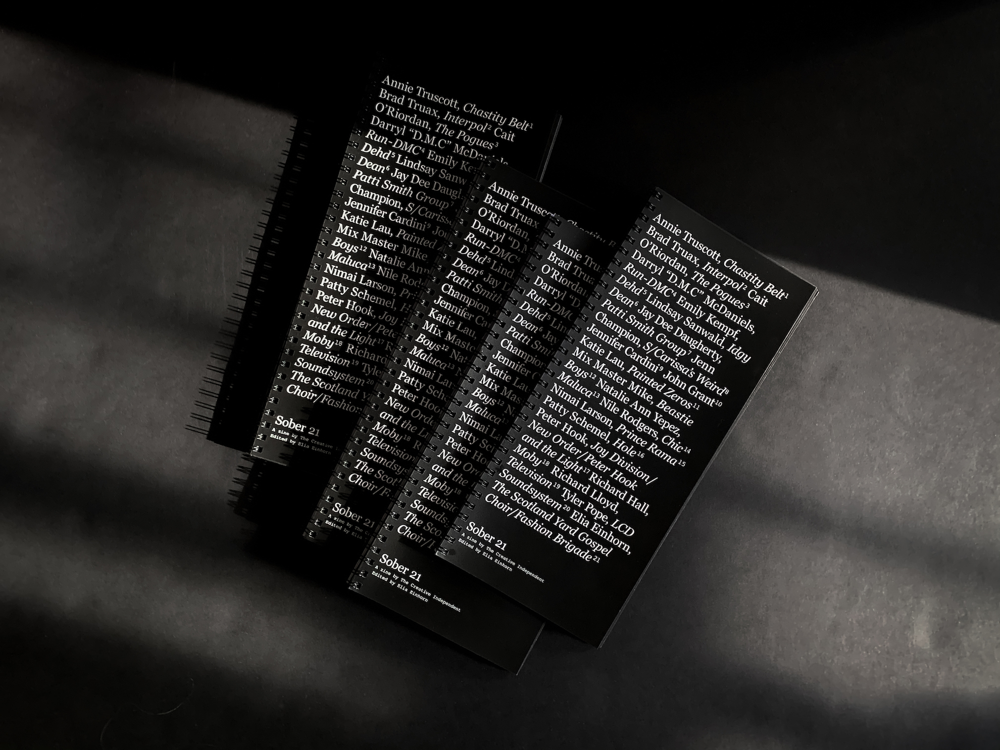
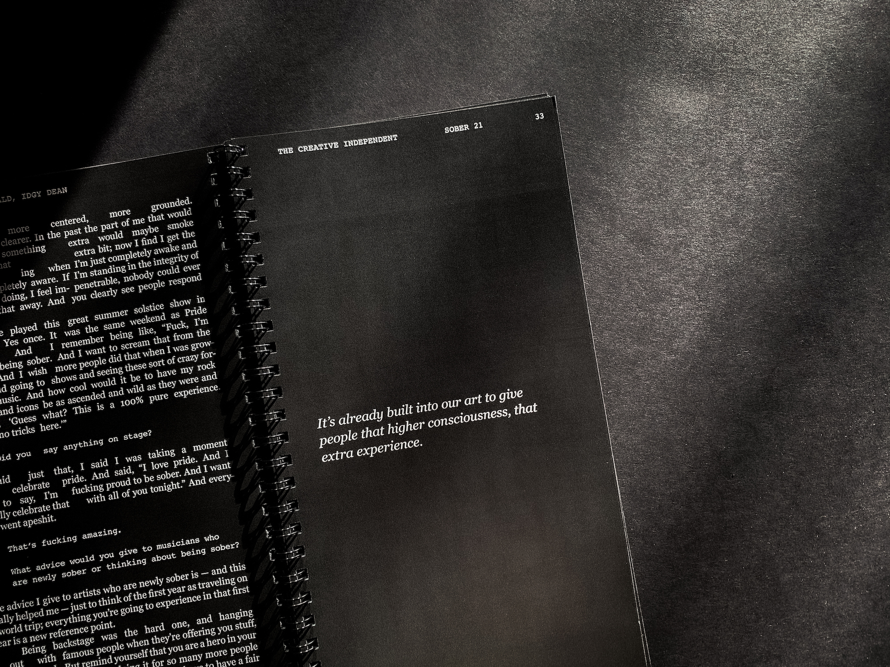
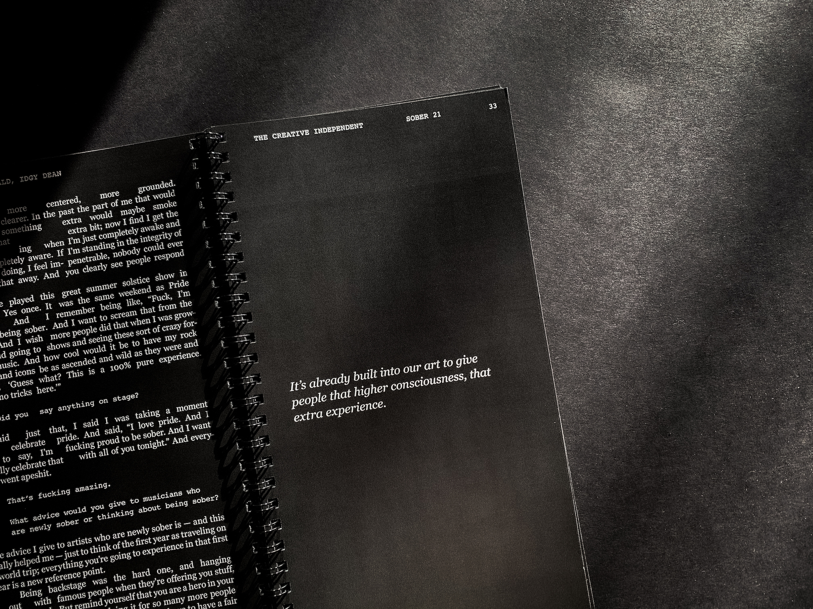
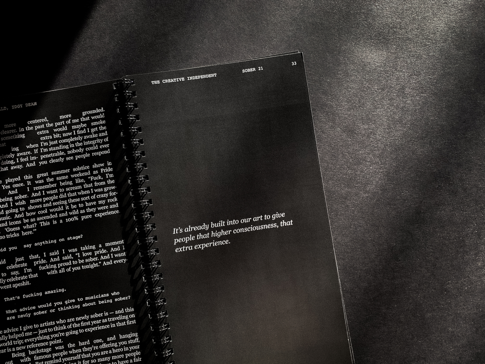

Sober 21 is a compendium of essays by, and interviews with, sober musicians. Through open conversation and intimate anecdotes, the zine raises awareness and provides resources for anyone seeking, grappling with, or curious about sobriety in the music industry.
The zine uses negative space in lieu of traditional forms of image-making, creating moments of noise, interruption, reflection, and pause.
Edited by Elia Einhorn and published by the Creative Independent. As seen on Coolhunting, Pitchfork, Stereogum, Rolling Stone, and others.
Read Sober 21 on The Creative Independent or read about Sober 21 on Coolhunting.

 




Sober 212021